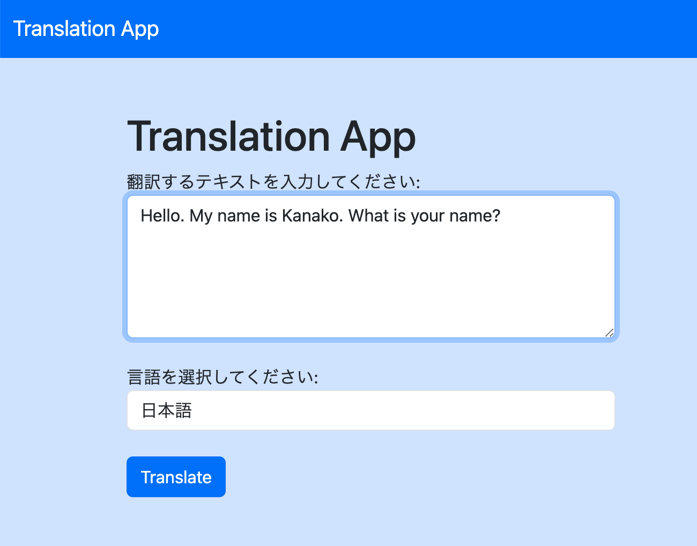
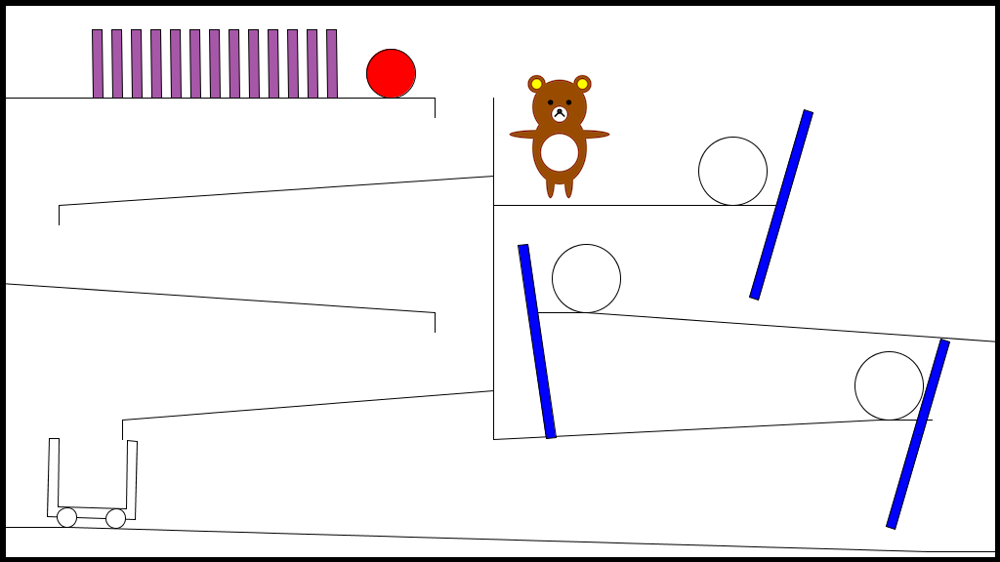
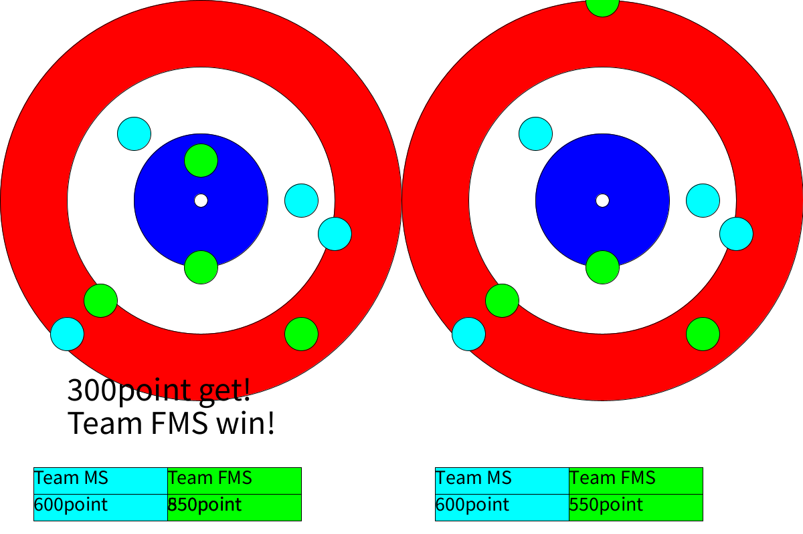

作品
Translation App
使用した言語: Python, HTML, CSS
使用したフレームワーク: Flask, Bootstrap
使用したAPI: GoogleTrans
個人制作。Flaskの勉強のために作ったWebアプリケーション。日本語、英語、スペイン語、ドイツ語、フランス語、韓国語、簡体中国語、繁体中国語に翻訳することができる。 ユーザーからの入力に基づいてテキストを翻訳する。
GitHub

AI Editor
使用した言語: PHP, JavaScript,Python
大学の実習内でのグループ制作にて開発した。
pitagora
使用した言語: Processing
ピタゴラ装置の実装。大学の授業の課題で製作した。fisicaとProcessingを使用した。スペースキーを押すとスタートし、上からボールが落ちてくるという仕組みになっている。
動画

curling_last
使用した言語: Processing
プログラミング演習Ⅰ（1年春学期）で作った作品。カーリングの最後の逆転シーンを再現した。緑の円をキーボードを使って動かし、中心に近づくと文字が表示される。

めいじろうと学校案内
使用した言語: HSP
EP演習（1年春学期）で作った作品。HSPを使用した。スペースキーを押すと話がどんどん進んでいき、選択肢に応じて話の内容が変わるということをノベルゲーム形式で再現した。背景の画像は全て自分で撮った写真を利用している。
動画